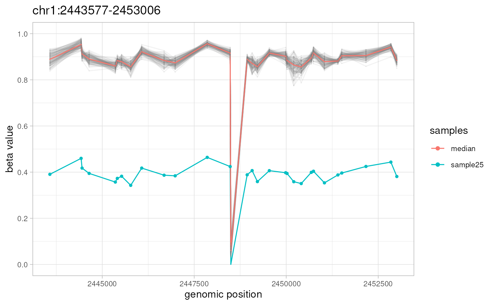
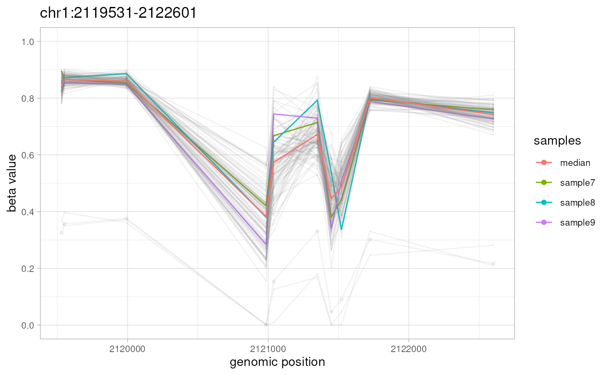

Simulated Illumina HumanMethylation 450k data set with 3000 CpGs and 100 samples
Source:R/ramr-data.R
ramr.data.RdData was simulated using GSE51032 data set as described in the reference.
Current data set ("ramr.data") contains beta values for 10000 CpGs
and 100 samples ("ramr.samples"), and carries 6 unique
("ramr.tp.unique") and 15 non-unique ("ramr.tp.nonunique")
true positive AMRs containing at least 10 CpGs with their beta values
increased/decreased by 0.5.
Usage
data(ramr)Format
Objects of class "GRanges" ("ramr.data, ramr.tp.unique,
ramr.tp.nonunique") and "character" ("ramr.samples").
References
Nikolaienko et al., 2020 (bioRxiv)
Examples
data(ramr)
amrs <- getAMR(
data.ranges=ramr.data, compute="IQR",
combine.min.cpgs=5, combine.window=1000, combine.threshold=5
)
#> Preprocessing data
#> [0.054s]
#> Computing IQR
#> [0.003s]
#> Creating genomic ranges
#> [0.015s]
plotAMR(data.ranges=ramr.data, amr.ranges=amrs[1])
#> Plotting 1 genomic ranges
#> 100%
#> [0.135s]
#> $`chr1:2443577-2453006`

#>
plotAMR(data.ranges=ramr.data, amr.ranges=ramr.tp.nonunique[4],
highlight=c("sample7","sample8","sample9"))
#> Plotting 1 genomic ranges
#> 100%
#> [0.102s]
#> $`chr1:2119531-2122601`

#>